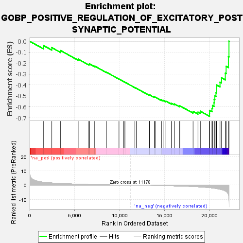
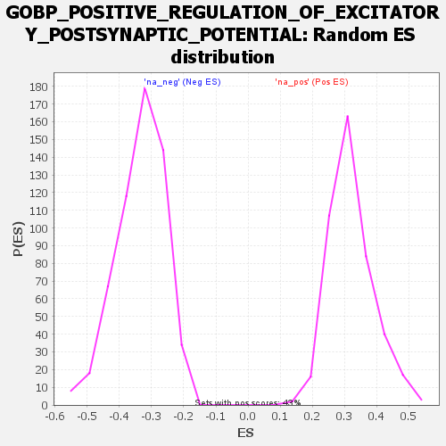

| | | Dataset | deseq_dnfgfr_res_for_gsea |
| Phenotype | NoPhenotypeAvailable |
| Upregulated in class | na_neg |
| GeneSet | GOBP_POSITIVE_REGULATION_OF_EXCITATORY_POSTSYNAPTIC_POTENTIAL |
| Enrichment Score (ES) | -0.6857255 |
| Normalized Enrichment Score (NES) | -2.0547042 |
| Nominal p-value | 0.0 |
| FDR q-value | 0.007339953 |
| FWER p-Value | 0.015 |
Table: GSEA Results Summary

Fig 1: Enrichment plot: GOBP_POSITIVE_REGULATION_OF_EXCITATORY_POSTSYNAPTIC_POTENTIAL
Profile of the Running ES Score & Positions of GeneSet Members on the Rank Ordered List
| SYMBOL | RANK IN GENE LIST | RANK METRIC SCORE | RUNNING ES | CORE ENRICHMENT | | 1 | Adrb2 | 1559 | 2.062 | -0.0400 | No |
| 2 | Pten | 2461 | 1.530 | -0.0582 | No |
| 3 | Nrxn1 | 3443 | 1.158 | -0.0854 | No |
| 4 | Grk2 | 5389 | 0.665 | -0.1635 | No |
| 5 | Tbc1d24 | 6580 | 0.465 | -0.2105 | No |
| 6 | App | 6649 | 0.458 | -0.2068 | No |
| 7 | Igsf11 | 7230 | 0.376 | -0.2274 | No |
| 8 | Neto2 | 8520 | 0.214 | -0.2825 | No |
| 9 | Prkar1b | 9925 | 0.068 | -0.3450 | No |
| 10 | Prkcz | 10458 | 0.019 | -0.3688 | No |
| 11 | Stx1a | 10586 | 0.007 | -0.3744 | No |
| 12 | Rims1 | 11689 | -0.053 | -0.4234 | No |
| 13 | Drd4 | 11846 | -0.070 | -0.4294 | No |
| 14 | Ssh1 | 13316 | -0.206 | -0.4928 | No |
| 15 | Wnt7a | 13317 | -0.206 | -0.4898 | No |
| 16 | Gsk3b | 13858 | -0.257 | -0.5104 | No |
| 17 | Grin2a | 13944 | -0.267 | -0.5103 | No |
| 18 | Rims2 | 14641 | -0.357 | -0.5365 | No |
| 19 | Ngfr | 14829 | -0.383 | -0.5393 | No |
| 20 | Reln | 15139 | -0.433 | -0.5468 | No |
| 21 | Nlgn1 | 15748 | -0.526 | -0.5666 | No |
| 22 | Baiap2 | 16078 | -0.580 | -0.5729 | No |
| 23 | Cacnb3 | 16671 | -0.685 | -0.5895 | No |
| 24 | Afdn | 18158 | -1.044 | -0.6413 | No |
| 25 | Rgs4 | 18704 | -1.237 | -0.6477 | No |
| 26 | Grin2b | 18961 | -1.332 | -0.6396 | No |
| 27 | Stx1b | 19983 | -1.829 | -0.6587 | Yes |
| 28 | Dvl1 | 19987 | -1.831 | -0.6318 | Yes |
| 29 | Grip2 | 20256 | -1.995 | -0.6145 | Yes |
| 30 | Chrna7 | 20311 | -2.032 | -0.5870 | Yes |
| 31 | Neto1 | 20488 | -2.201 | -0.5624 | Yes |
| 32 | Nlgn3 | 20503 | -2.211 | -0.5304 | Yes |
| 33 | Ptk2b | 20576 | -2.277 | -0.5001 | Yes |
| 34 | Dlg4 | 20700 | -2.399 | -0.4702 | Yes |
| 35 | Dbn1 | 20755 | -2.474 | -0.4361 | Yes |
| 36 | Shank1 | 20776 | -2.495 | -0.4002 | Yes |
| 37 | Grin2c | 21149 | -2.949 | -0.3735 | Yes |
| 38 | Cux2 | 21320 | -3.201 | -0.3340 | Yes |
| 39 | Grin1 | 21738 | -4.158 | -0.2914 | Yes |
| 40 | Grin2d | 21828 | -4.505 | -0.2290 | Yes |
| 41 | Shank3 | 22081 | -6.739 | -0.1409 | Yes |
| 42 | Nlgn2 | 22148 | -9.797 | 0.0007 | Yes |
Table: GSEA details [plain text format]

Fig 2: GOBP_POSITIVE_REGULATION_OF_EXCITATORY_POSTSYNAPTIC_POTENTIAL: Random ES distribution
Gene set null distribution of ES for GOBP_POSITIVE_REGULATION_OF_EXCITATORY_POSTSYNAPTIC_POTENTIAL